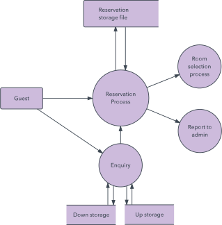

Data Flow Diagrams
Maps out the flow of information for any process or system
Shows data inputs, outputs, storage points, and routes between destinations
Components of a DFD
External Entity
Outside system that sends or receives data
Communicates with the system in the diagram
Sources and destinations of information entering or leaving the system
Drawn on the edge of the diagram
Processes
Anything that changes the data, producing an output
Described by a short label

Data Store
Files which hold information for later use (eg. database)
Has a simple label

Data Flow
The route that the data takes between the external entities, processes and data stores
Shown with arrows
Labelled with a short data name

Levels of DFD's
Level 0 (Context Diagram)
Basic overview of the whole system
Shows the sytem as a single high level process, with its relationship to external entities

LLvel 1
Provides a detailed breakout of pieces of the level 0 DFD
Main functions of the system highlighted
High level process of the level 0 DFD is broken down into its subprocesses

Level 2
Goes one step deeper into parts of the level 1 DFD